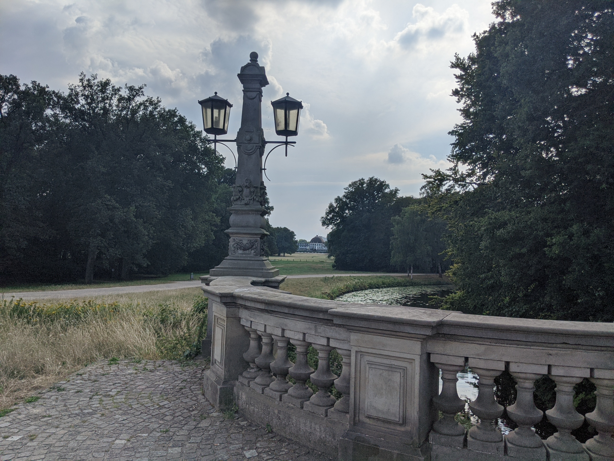

Bremens largest Park: Buergerpark
Bremens biggest green lung within the city is the anciet Buergerpark, besides a great plants, flowers, lakes and little rivers, it has spacious lawns, very good cafes and music venues. A local recreational hotspot 